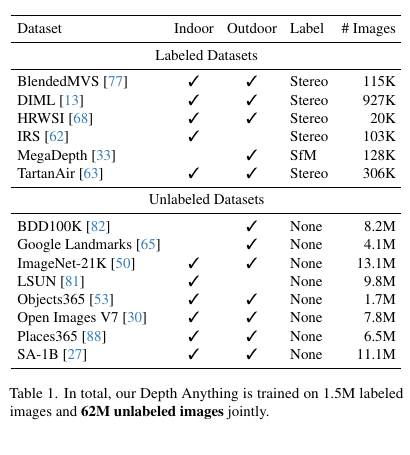
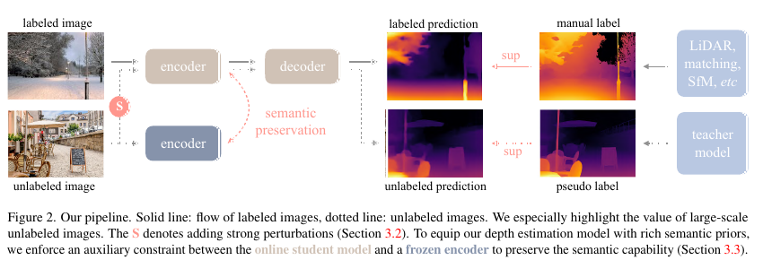
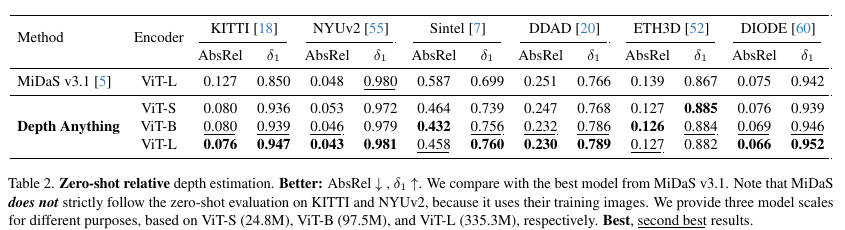
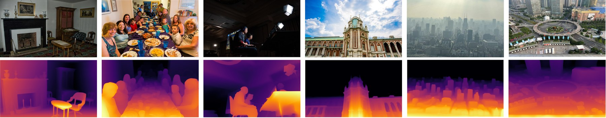
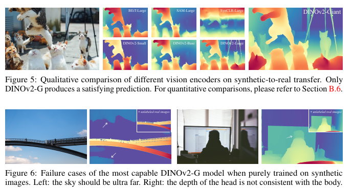
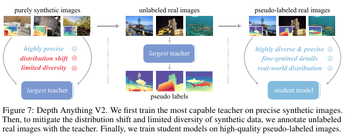
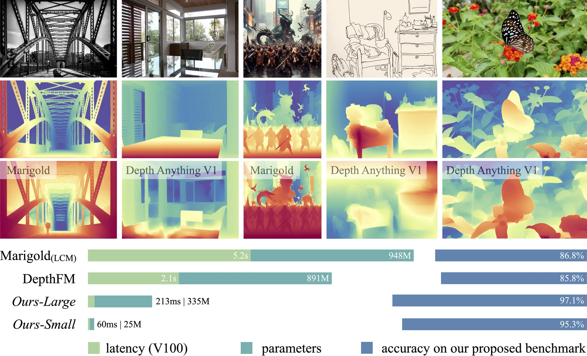
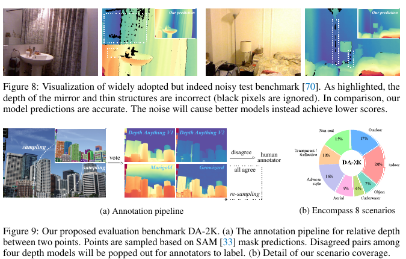

一类把昂贵监督、模型判断和大规模无标签数据组织起来的训练框架。
它还学习教师对输入空间的判断：类别相似性、决策边界、特征结构，以及对无标签样本的标注能力。
可以是模型集成、大模型、EMA 模型、人工标注训练出的高精度模型，甚至是冻结的预训练编码器。
学会逼近教师行为，同时满足真实场景的延迟、显存、平台、泛化和鲁棒性约束。
原始动机很工程化：集成模型预测效果好，但部署笨重。蒸馏把集成或大模型的知识压进单个可部署模型。
hard label 只提供正确类别；soft target 进一步保留类别间相似性、边界信息和教师不确定性。
高质量深度标注昂贵，跨场景差异大，传感器和合成数据都有偏差。教师学生框架把有限监督和大规模无标签图像连接起来。


如果 teacher 和 student 的架构、初始化和训练分布高度接近，学生容易同时继承教师的正确判断与系统性错误，额外无标签数据的边际收益会下降。

表格说明：在 KITTI、NYUv2、Sintel、DDAD、ETH3D、DIODE 等未见数据集上，Depth Anything 多尺度模型超过 MiDaS v3.1。

V2 把问题进一步拆开：真实标签不一定可靠，合成标签更精确但有域偏移；因此先用合成数据训强 teacher，再让 teacher 给真实无标签图像搭桥。
纯合成训练会遇到分布偏移：天空、人物、反射、透明物体等真实模式覆盖不足。


V2 同时比较质量、速度和参数量，目标不只是扩大模型规模，而是获得可部署的细节质量。

V2 指出现有真实测试集可能存在噪声、场景单一、分辨率低等问题，因此构建 DA-2K 覆盖 8 类真实场景。
